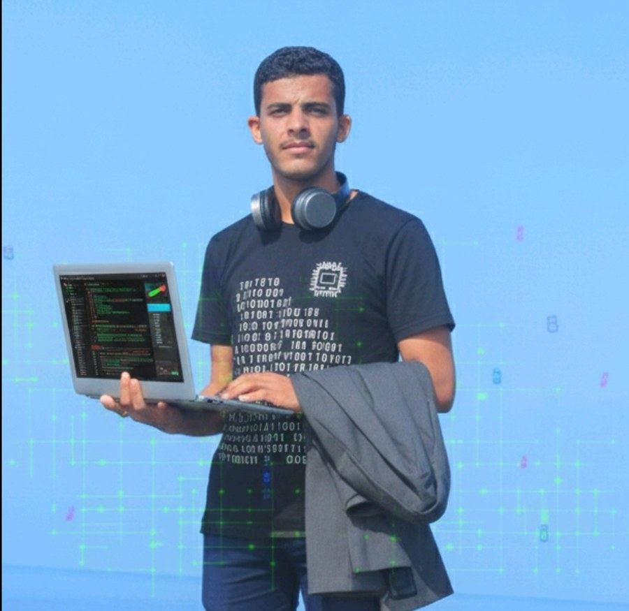

تطوير الويب
معرفة بأساسيات HTML وCSS وبناء صفحات ومواقع ويب.
السيرة الذاتية والملف الشخصي
طالب في السنة الثالثة بالجامعة التخصصية الحديثة، أعمل على تطوير مهاراتي التقنية وبناء مشاريع تساعدني على الانتقال من التعلم إلى التطبيق العملي.

تعرف عليّ
أنا حمران عبد الوهاب صالح محمد الفرجي، طالب في السنة الثالثة بتخصص تقنيات المعلومات في الجامعة التخصصية الحديثة. أتعلم الشبكات وتطوير الويب والحوسبة السحابية، ولدي معرفة بأساسيات HTML وCSS ولغة C. أطمح إلى أن أصبح مطور ويب محترفاً، وأن أعمل على مشاريع حقيقية وأواصل تطوير مهاراتي لتحقيق أهدافي المهنية.
مسيرتي الأكاديمية
الجامعة التخصصية الحديثة
السنة الدراسية الثالثة
ما أتعلمه وأطبقه
معرفة بأساسيات HTML وCSS وبناء صفحات ومواقع ويب.
معرفة بأساسيات البرمجة بلغة C.
تعلم مفاهيم الشبكات وتقنيات الاتصال وإدارتها.
اهتمام بالتعرف على خدمات الحوسبة السحابية واستخداماتها.
اهتمام بتطوير التطبيقات والتعرف على طرق بنائها.
أعمال وتطبيقات
تطبيق ما تعلمته في بناء صفحات ومواقع ويب باستخدام تقنيات الويب.
HTML · CSSتنظيم محتوى صفحات الويب والاهتمام بتنسيقها وتجربة استخدامها.
تصميم واجهاتتطبيقات وتدريبات تعليمية مرتبطة بمفاهيم الشبكات وتقنيات الاتصال.
شبكاتيمكنك لاحقاً إضافة صور وروابط لكل مشروع لعرض أعمالك الفعلية.
التعلم المستمر
دورات تعليمية لتطوير المعرفة بالبرمجة واللغات التقنية.
دورات لتطوير مهارات اللغة الإنجليزية.
أضف أسماء الدورات والجهات المانحة وتواريخ الحصول عليها عند توفرها.
للتواصل والتعاون
يسعدني التواصل بشأن فرص التدريب والتعلم والمشاريع التقنية.